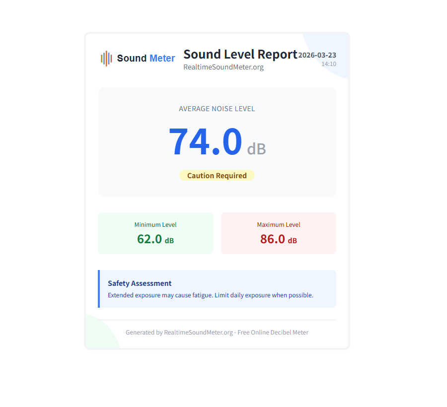
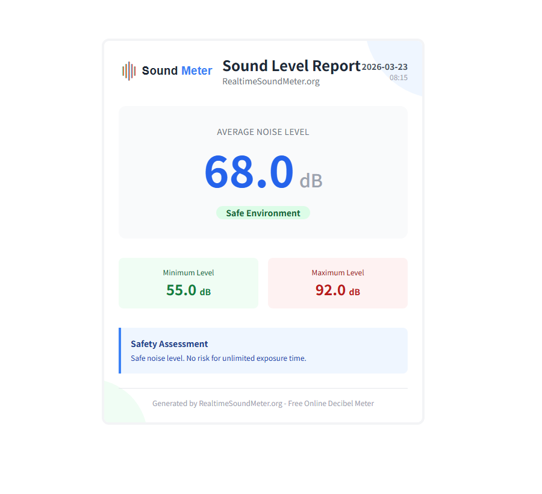

リアルタイム騒音計ダッシュボード
✅ ステータス: 測定準備完了
ヒント: 正確な環境分析のために、30〜60秒間測定して突発的なノイズを平滑化することをお勧めします。
注: 参考推定値です。端末のマイク差により値が上下する場合があります。基準値が不自然な場合は「測定値を調整」をお試しください。静かな部屋 ≈ 30〜40 dB、会話 ≈ 60 dB、交通 ≈ 80 dB。
騒音レベルガイド
注: デシベル尺度は対数です - 10 dB の増加は約10倍のエネルギー増加を意味します。
使い方
-
1マイクへのアクセスを許可「測定を開始」をクリックし、マイクの使用を許可してください。
-
2騒音レベルを監視リアルタイムのdB値を確認します。推奨: 突発的な音を除外するため、約1分間測定を続けてください。
-
3停止してレポートを作成「測定を停止」をクリックし、「レポートを保存」で詳細なPDFサマリーをダウンロードできます。
-
4対策を講じるデータを使用して有害な騒音源を特定し、聴力を保護してください。
デシベルレベル別の安全な暴露時間
この表と下の計算は、dBと時間の関係を素早く把握し、条件を揃えた比較に使うための目安です（法令・規格の測定ではありません）。参照：NIOSH/CDC。
クイック暴露時間計算
85 dB = 8時間、3 dB交換率で1日の最大暴露時間を推定します（目安であり、法令・規格の測定ではありません）。
- 判断には平均値（短いピークではなく）を使うのが安定です。
- 比較するなら距離・位置・条件を揃えます。
- 規制・法令対応には、認証機器と手順に従ってください。
一日中暴露しても安全
NIOSH推奨の8時間暴露限度
芝刈り機、オートバイの騒音レベル
ヘアドライヤー、電動工具
ロックコンサート、サイレン
爆竹、ジェットエンジン - 暴露を避ける
⚠️ 重要: 85 dBを超えると、3 dB増加するごとに安全な暴露時間は半分になります。詳細はNIDCDをご覧ください。
デシベルと騒音測定について
騒音計（デシベルメーター）は、音圧レベル（SPL）をデシベル（dB）で測定します。当サイトのオンラインツールは、お使いのデバイスのマイクを使用して環境騒音を検出し、リアルタイムで測定値を提供します。
なぜデシベルが重要なのか: デシベルの尺度は対数です。10 dBの増加は音の強度が約10倍になり、約2倍の大きさに感じられます。つまり、80 dBは70 dBより少し大きいだけでなく、大幅に強い音です。
🏥 WHOの背景: 高い騒音への長時間暴露は、聴覚リスクと関連します。実用的には、安定したレベルを低く保ち、レベルが上がる場面では「暴露時間」を管理するのが有効です。参照：世界保健機関（WHO）。
騒音が聴力を損なう仕組み: 大きな音は内耳の繊細な有毛細胞を損傷する可能性があります。これらの細胞は再生しないため、損傷は永久的です。高強度または長時間の騒音は以下を引き起こします：
- 内耳有毛細胞への物理的損傷
- 聴神経の過剰刺激
- 騒音性難聴（NIHL）
- 耳鳴りや過敏症
参考：保健当局。
プライバシーとデータセキュリティ
あなたのプライバシーは私たちの最優先事項です。 すべての音声処理はブラウザ内でローカルに行われます。音声データが録音、保存、またはサーバーにアップロードされることはありません。「レポートを保存」機能は、現在のセッションの統計情報（最小、最大、平均）を使用して、お使いのデバイス上で直接PDFファイルを生成します。
他のオンライン騒音計との違い
単なるリアルタイム数値ではなく、再現性のある比較と記録に重点を置いています。
- 端末内でレポート生成：「レポートを保存」は端末上でファイルを生成し、マイクの生音（raw audio）をアップロードしません。
- 可視化：周波数スペクトル＋履歴グラフで、傾向とピークを把握できます。
- 再現性のためのガイド：SOPのコツ、サンプルレポート、ログテンプレで測定条件を揃えやすくします。
- 透明性：Methodology、Accuracy と Changelog で方法と変更点を公開。
- プライバシー：Privacy にデータフローと利用サービスを記載。
サンプルレポート（読み方）
「レポートを保存」と同じテンプレートの静的プレビューです。min/avg/maxの見方と、再現性のある記録方法の例を示します。
寝室（深夜）– マンションの生活音チェック
低
解釈：maxは一瞬のイベント（上階の足音、廊下のドア音）になりがちです。体感に近いのは、同じ時間帯・同じ条件での平均値です。
- 同じ時刻（例：0時前後）に測定。
- 窓の開閉と換気扇/エアコンの状態を記録。
- 3回測って平均値で比較。
掃除機（強/弱・ロボット）– 1m
高め
解釈：モード（強/弱）や床材、吸い込み口の違いで変わります。「同じ条件で比較する」用途に向きます。
- 床（フローリング/カーペット）とモードを記録。
- 距離（1m）と位置を固定。
- 平均値で比較（ピークは参考程度）。
幹線道路・電車（窓開け）
うるさい
解釈：道路や線路沿いは変動が大きいので、同じ時刻・同じ位置で「窓開け/窓閉め」を60秒で比較すると差が見えやすいです。
- 平日と休日を分けて測定。
- 窓の状態と時間帯（朝/夜）を記録。
- 平均値は暴露、最大値はイベント。
測定ログ用テンプレート（コピー&ペースト）
日や端末が変わっても比較しやすい記録形式です。
date,time,location,distance,device,avg_db,max_db,notes 2026-03-23,21:30,bedroom,1m,phone,34,48,window closed; HVAC off 2026-03-24,21:30,bedroom,1m,phone,36,52,window closed; light rain 2026-03-25,21:30,bedroom,1m,phone,33,46,window closed; quiet night
騒音公害の健康への影響
騒音は聴力だけの問題ではなく、慢性的な暴露は睡眠やストレスなど全体的な健康にも影響し得ます。参考：WHO ヨーロッパ。
🛡️ 実用的な保護のヒント
- 可能な限り、毎日の騒音暴露を70dB以下に抑える
- 85dB以上の環境では耳の保護具（耳栓/イヤーマフ）を着用する
- 高強度の騒音暴露時間を制限する
- 騒音監視ツールを使用して音量レベルを追跡および管理する
- 大きな音にさらされた後は、耳に休息期間を与える
参考：NIOSH/CDC。
オンライン騒音計の実用的な使用例
この無料のオンライン騒音計は、ブラウザを機能的な騒音測定ツールに変えます。校正されたプロ仕様のクラス1デシベルメーターの代わりにはなりませんが、騒音レベルを理解することで健康と生産性を向上させることができる日常生活の状況において、優れた参考になります。
🏠 家庭と生活
- 家電テスト: 新しい食器洗い機や掃除機が宣伝通り静かかどうかを確認します。
- 近隣の騒音: 隣人の改装工事や音楽が、あなたのリビングルームから実際にどれくらいの音量なのかを客観的に測定します。
- 睡眠環境: 最適な睡眠の質のために、寝室が推奨される30〜40dB以下に保たれていることを確認します。
💼 仕事と勉強
- オフィスの気晴らし: オープンプランのオフィスで騒音のピーク時間を特定し、集中して仕事をする時間をスケジュールします。
- 学習ゾーン: 図書館やカフェで最も静かな場所を見つけます。理想的な学習騒音は、多くの場合40〜50dB前後です。
- リモートワーク: 重要なビデオ会議通話に参加する前に、背景の騒音レベルをテストします。
- 文書化: 「レポートを保存」機能を使用して、職場のコンプライアンスや紛争解決のために騒音レベルのPDF記録を作成します。
🎧 オーディオとエンターテイメント
- 安全なリスニング: スピーカーシステムの音量を調整して、映画のために安全な70〜80dBの範囲内に収めます。
- イベント監視: 参加しているコンサートやクラブが危険な100dBレベルを超えていないか確認します。
- ゲーミングセットアップ: 静音PCビルドを最適化するために、負荷時のコンピュータファンのノイズを測定します。
🩺 健康とウェルネス
- 耳鳴り管理: 耳鳴りを引き起こす可能性のある環境を特定するのに役立ちます。
- 赤ちゃんの安全: 保育室の環境が落ち着いていて静かであり、ホワイトノイズマシンがうるさすぎないことを確認します。
- ストレス軽減: 感覚入力をより適切に管理するために、ストレスレベルと環境騒音を関連付けます。
日本でよくある騒音シーン: 測定が役立つ場面
同じ距離・同じ条件で繰り返すと、比較と傾向の把握がしやすくなります。次のようなケースは記録に向いています。
典型的な例
- 集合住宅: 上階の足音、ドアの開閉、設備音（換気扇・給湯器）の変化を日別に比較。
- 都市交通: 電車の通過音や道路交通、夜間の静けさの差を窓の開閉で確認。
- 在宅ワーク: 室内のベースノイズ（エアコン・PCファン）と突発的ピーク（工事、配送）を分けて把握。
記録のコツ
- 場所・時刻・距離（例: 1 m）とスマホの高さ/向きをメモします。
- 30〜60秒測定して3回繰り返し、平均値で比較します。
- 「レポートを保存」でPDF化し、条件（窓/ドア、人数、機器状態）を書き添えます。
日本向けの参考リンク
- 騒音の扱いは、用途（生活騒音/工事/事業所など）や自治体の条例で手続きが変わることがあります。まずは同条件の記録を複数回集めるのが有効です。
- 国の情報（環境省・騒音）：環境省
- 相談先は自治体の環境・生活衛生担当（市区町村）になるケースが多いです。
仕組み: ブラウザベースの音声分析
専用のハードウェアセンサーを使用する従来の騒音計とは異なり、このツールは最新のWebブラウザ（Chrome、Edge、Safari、Firefox）に組み込まれているWeb Audio API標準を活用しています。プロセスの簡略化された内訳は次のとおりです。
- 信号キャプチャ: ブラウザはデバイスのマイク（入力ストリーム）へのアクセスを要求します。
- デジタルサンプリング: 生のアナログ音波は、毎秒数千回デジタルデータパケット（サンプル）に変換されます。
- 周波数分析: 高速フーリエ変換（FFT）と呼ばれるアルゴリズムを使用して、さまざまな音の周波数の強度を分析します。
- RMS計算: 音声信号の平均電力を決定するために、二乗平均平方根（RMS）振幅が計算されます。
- デシベルマッピング: この生のデジタル値は、標準的な部屋の音響を近似するように設計された校正アルゴリズムを使用して、デシベル（dB）スケールにマッピングされます。
校正に関する注意: すべてのマイク（スマートフォン、ラップトップ、ウェブカメラ）は異なる感度ハードウェアを持っているため、Webベースのメーターは外部ハードウェア校正なしでは100％正確にはなりません。一般的な消費者向けデバイスのマイクに合わせた「最適」曲線を使用して、可能な限り最も有用な相対測定値を提供します。
よくある質問
この騒音計は正確ですか？
このオンライン騒音計は良好な推定値を提供しますが、プロ仕様のデバイスとは一致しない場合があります。精度はデバイスのマイクの品質と校正に依存します。正確な測定については、認定プロバイダーの専門機器を検討してください。
デシベルレベルを比較 →なぜマイクへのアクセスを許可する必要があるのですか？
騒音計は周囲の騒音レベルを測定するためにマイクへのアクセスを必要とします。音声はブラウザ内でローカルに処理され、サーバーに記録、保存、送信されることはありません。プライバシーは保護されています。
安全な騒音レベルとは何ですか？
実用的な目安として、長く続くレベルはできるだけ70dB未満に抑え、85dB付近では「暴露時間」を重視してください（レベルが上がるほど安全時間は急速に短くなります）。
NIOSH ガイドライン →モバイルデバイスで使用できますか？
はい！この騒音計はデスクトップとモバイルデバイス（iOS Safari、Chrome Mobileなど）の両方で動作します。プロンプトが表示されたらマイクへのアクセスを許可するだけで測定を開始できます。マイクの品質はデバイスによって異なることに注意してください。
騒音はどのように聴覚を損なうのですか？
大きな音は内耳の蝸牛にある小さな有毛細胞を損傷します。これらの細胞は音の振動を脳への電気信号に変換します。一度損傷すると再生せず、永久的な難聴につながります。高強度または長時間の暴露はこの損傷を加速させます。聴覚の健康が気になる方は、無料のオンライン聴覚テストをお試しください。
NIDCDで詳細を見る →「3dB交換率」とは何ですか？
NIOSHの3dB交換率は、騒音レベルが3dB増加するごとに、安全な暴露時間が半分になることを意味します。例えば：85dB = 8時間、88dB = 4時間、91dB = 2時間、などです。この指数関数的な関係は、わずかなdBの増加が重要であることを示しています。
📚 信頼できる情報源と参考文献
このページの情報はすべて、国際的に認められた保健安全機関のガイドラインと研究に基づいています。
🏛️ NIOSH/CDC
国立労働安全衛生研究所 - 騒音と難聴の予防
🌍 世界保健機関 (WHO)
安全なリスニングガイドラインと難聴予防
🔬 NIDCD (NIH)
国立聴覚・その他のコミュニケーション障害研究所
👂 Hearing Health Foundation
デシベル暴露チャートと安全なリスニング教育
🇪🇺 WHO ヨーロッパ
環境騒音と健康への影響に関する研究
📰 Forbes Health
デシベルレベルと聴覚の健康ガイド
最終更新: 2026年1月。私たちは正確性を確保するために、最新の科学的ガイドラインに照らしてコンテンツを継続的に見直しています。